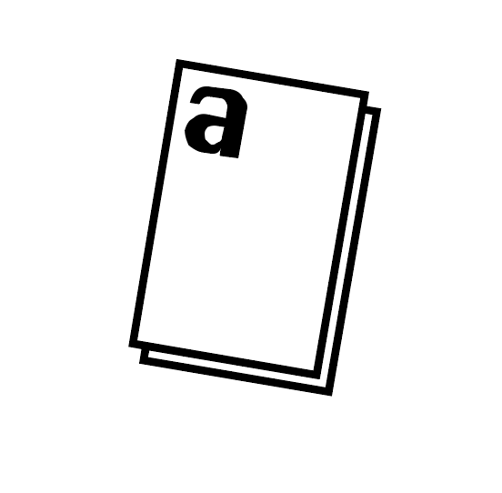
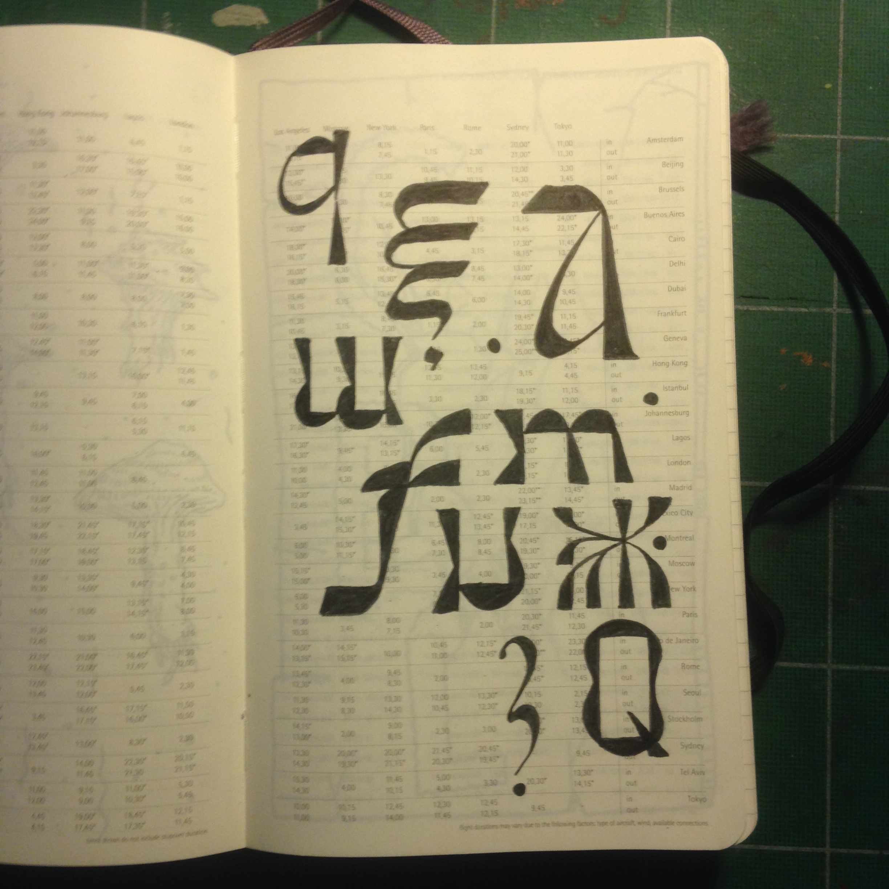
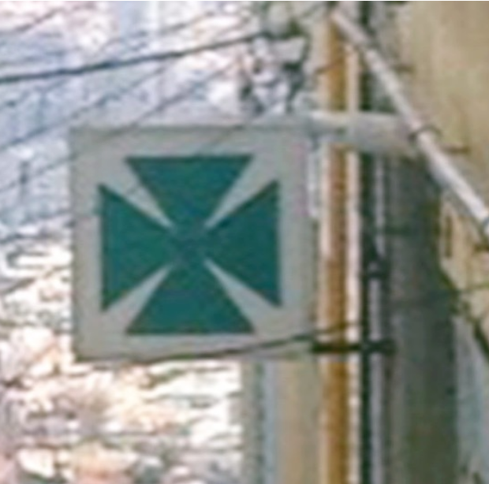
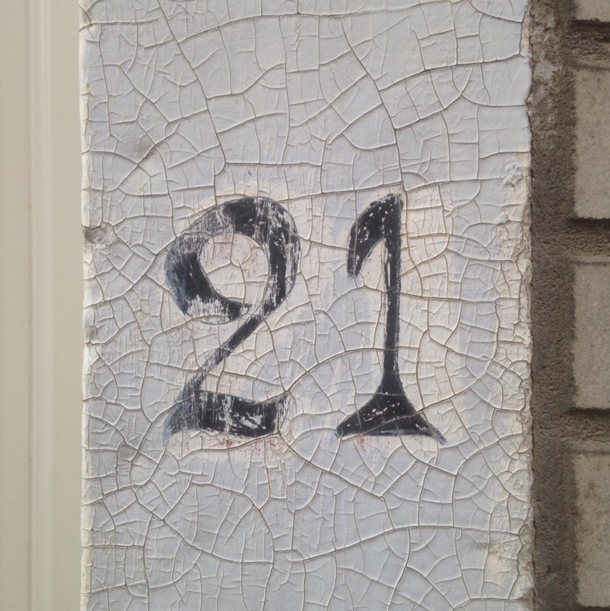
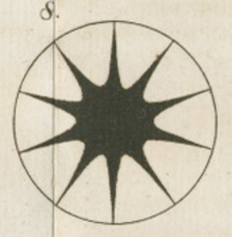
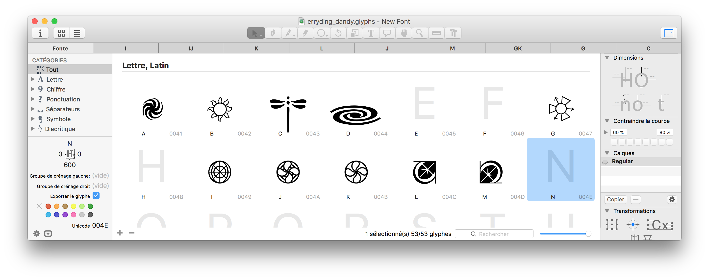

?
Ce site est un index de différents projets personnels sur lesquels je travaille actuellement. J'essaye de façonner cet espace comme une dématerialisation de mon atelier et non comme un portfolio.
Trouvez l'avancée sur différents projets de fontes. Il est aussi possible de feuilleter un de mes carnet de recherche.
Sinon je collectionne aussi beaucoups d'images. Actuellement il n'y a pas toujours de projets lié à ces collection, Je ne sais même plus comment certaine ont commencées, elles sont presque toute trouvables dans les highlight de mon compte instagram mais en voici tout de même quelque une. Ici les idéogrammes trouvés lors de voyages, ici une collection de croix de pharmacies, j'ai aussi une collection de numéro de maison que je poste dans l'ordre régulièrement en story sur instagram.
Ici un projet en cours cette collection collaborative a pour finalité de rassembler tous les éléments graphiques humbles dans une police dingbats. l'avancée est visible ici
Si vous vous sentez fatigué je vous invite prendre l'air dans Le Jardin (Attention tout de même, si vous fumez une cigarette, à bien la mettre dans le cendrier, l'herbe est sèche en cette saison). Sinon il y a la bibliothèque dans laquelle vous trouverez quelque pdf.
Pour discuter il y a aussi le Sausage Club Workspace ce serveur discord est pensé comme un espace de travail dématérialisé.
{kind=link}